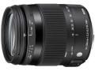
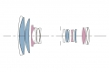
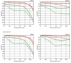

器材库 > APS画幅镜头 > 18-200/3.5-5.6 DC MACRO OS HSM

详细规格
镜头类型
远摄变焦镜头
发布日期
2014-01-07
厂家推荐价格
63,000.00 （日元）
焦距
18mm-200mm
等效35mm画幅焦距
27mm-300mm
最大光圈
f/3.5-f/5.6
最小光圈
f/22
视角（对角）
76.5° - 8.1°
镜头结构
16片/13组
非球面镜片
3片
低/超低色散镜片
4片
光圈叶片
7片
最近对焦距离
39cm
最大放大倍率
0.33倍
驱动马达
HSM（超声波马达）
滤镜口径
62mm
镜头卡口
Minolta/Konica-Minolta/Sony AF, Nikon AF, Pentax AF, Sigma SA
防抖
是
颜色
黑色
尺寸
70.7 × 86mm
重量
430g
砖业2014-05-12 10:044.5 分
操作性 4.50耐用性 4.50性价比 4.50解像力 4.50色彩还原 4.50机械结构 4.50
绿野红尘2014-05-12 09:294.42 分
操作性 4.50耐用性 4.00性价比 4.50解像力 4.50色彩还原 4.50机械结构 4.50
wanjiash2014-04-27 21:474.5 分
操作性 4.00耐用性 4.50性价比 5.00解像力 4.50色彩还原 4.50机械结构 4.50
产品图 / 样片

